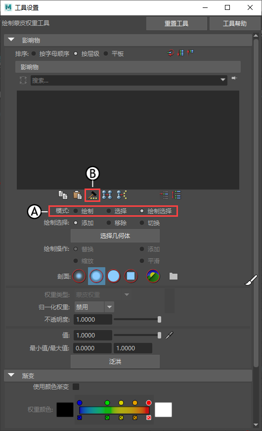
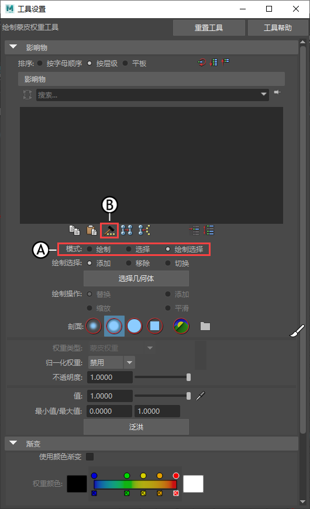

权重锤工具可快速修复正在产生钉形或不需要的变形并具有权重的顶点。单击权重锤可从相邻顶点指定选定的、具有权重值的顶点。
修复具有不需要的权重的顶点
- 选择对象。
- 打开“绑定”(Rigging)菜单集 (F3) 中的“蒙皮”(Skin)菜单，然后选择“绘制权重”(Paint Weights) >
 。
此时将打开“绘制蒙皮权重工具”(Paint Skin Weights Tool)。
。
此时将打开“绘制蒙皮权重工具”(Paint Skin Weights Tool)。绘制权重工具：A.模式 B.权重锤
- 在“模式”(Mode)选项中，选择“绘制”(Paint)、“选择”(Select)或“绘制选择”(Paint Select)（请参见上图中的 A.）。
提示：
使用热键 Ctrl + < 和 Ctrl + >，以在这些模式之间进行快速切换。
- 选择要修复的顶点。
- 从“绘制蒙皮权重工具”(Paint Skin Weights Tool)影响物列表（请参见上图中的 B.）下方的图标或从“蒙皮”(Skin)菜单中选择“锤式蒙皮权重”(Hammer Skin Weights)
 。
。
“锤式蒙皮权重”(Hammer Skin Weights)为选定顶点指定与其相邻顶点相同的权重值。练习骨架时，可看到更平滑的变形结果。